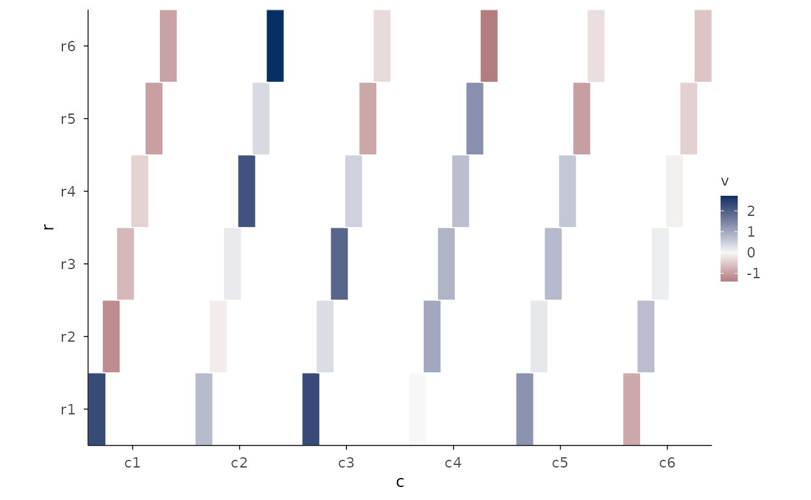
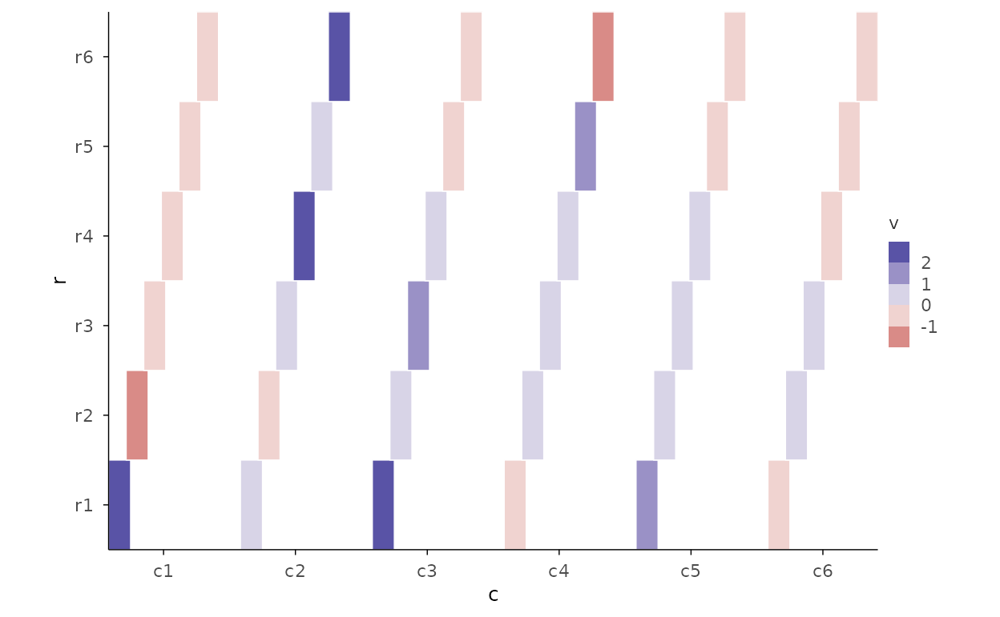
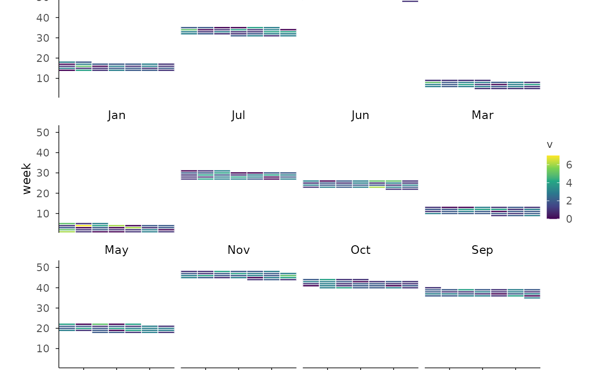

Tile heatmaps from long data
Rect heatmap with diverging scale (stage 5: mid + rdbu)
set.seed(7)
d <- expand.grid(r = paste0("r", 1:6), c = paste0("c", 1:6))
d$v <- rnorm(nrow(d))
d |>
plotit(encode(x = c, y = r, fill = v)) |>
mark_rect() |>
scale_fill(mid = 0, range = "rdbu")
#> Scale for fill is already present.
#> Adding another scale for fill, which will replace the existing scale.
Binned legend (stage 5: n_bins)
d |>
plotit(encode(x = c, y = r, fill = v)) |>
mark_rect() |>
scale_fill(range = "rdylbu", n_bins = 5)
#> Scale for fill is already present.
#> Adding another scale for fill, which will replace the existing scale.
mark_heatmap from a matrix
Recipe: calendar heatmap (R-15)
Time bins + mark_rect, year/month faceted.
set.seed(7)
days <- seq(as.Date("2024-01-01"), as.Date("2024-12-31"), by = "day")
cal <- data.frame(d = days, v = rpois(length(days), 2))
cal$wday <- as.integer(format(days, "%u"))
cal$week <- as.integer(format(days, "%W"))
cal$mon <- format(days, "%b")
cal |>
plotit(encode(x = wday, y = week, fill = v)) |>
mark_rect() |>
split_wrap(mon) |>
scale_fill(range = "viridis")
#> Scale for fill is already present.
#> Adding another scale for fill, which will replace the existing scale.